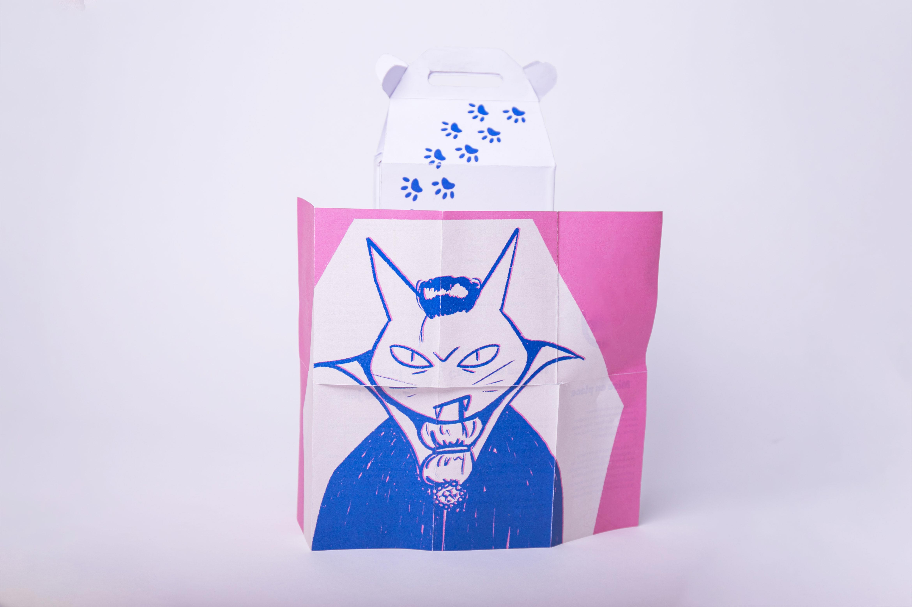
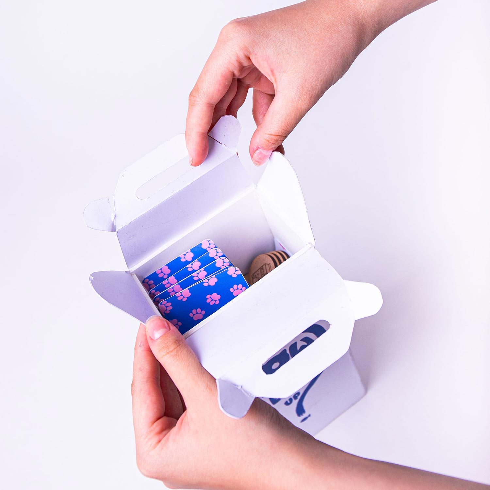
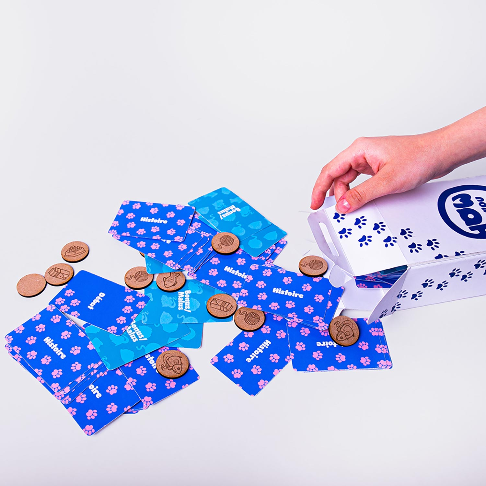
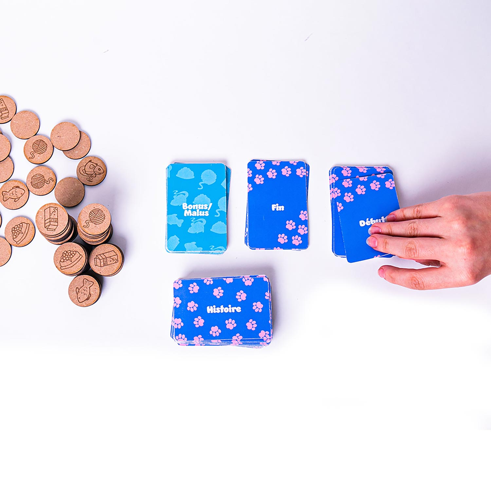
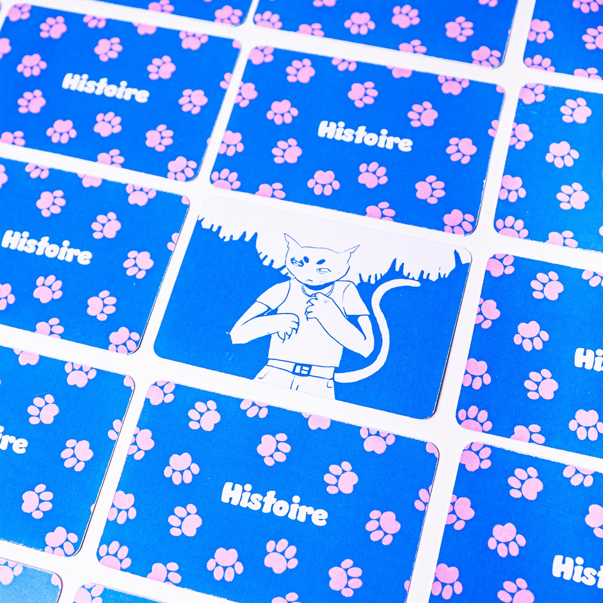
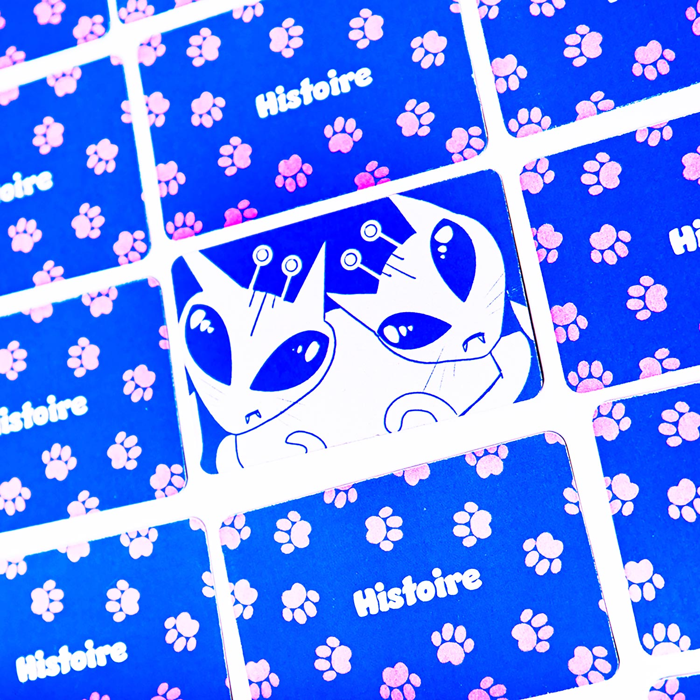
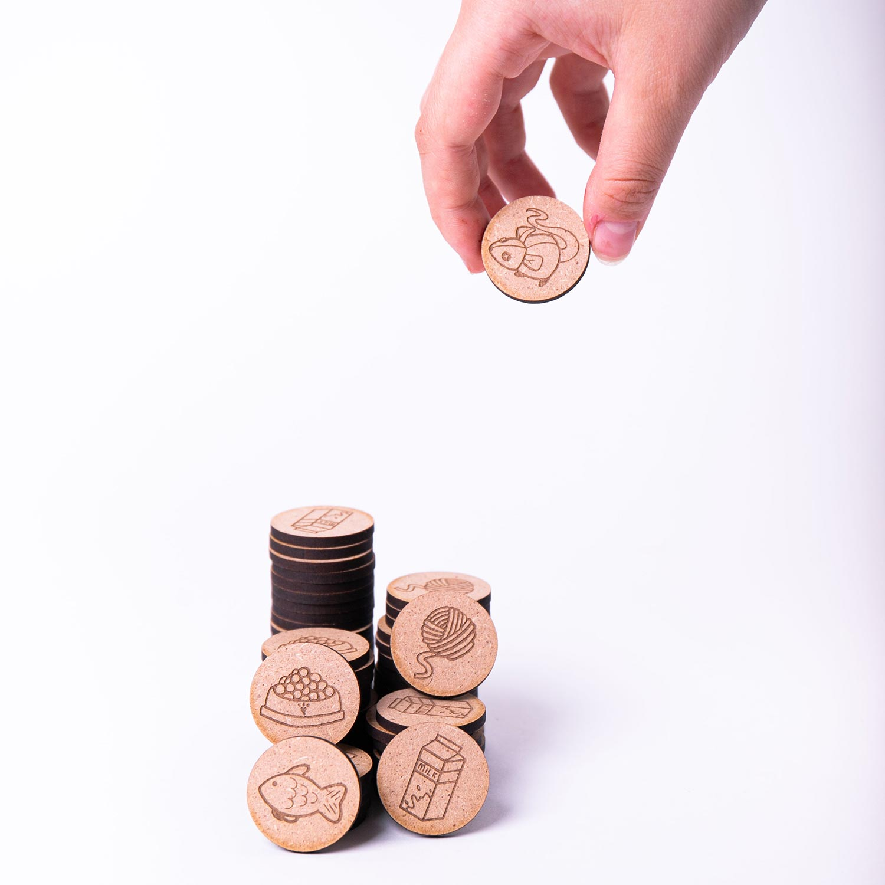

Projet réalisé lors d'un workshop de game design avec Tatiana Vilela dos Santos. Le but était de créer un jeu de société avec certaines contraintes. Les contraintes ici étaient la gestion de ressources, la narration et les cartes.






